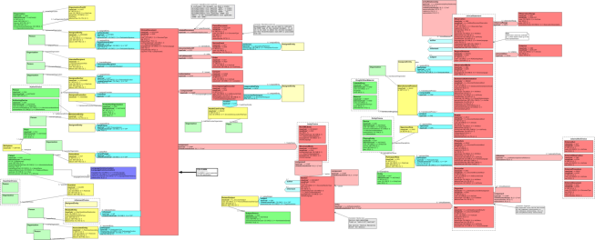

Appendix E: Standards Profiling and Documentation Conventions
E.1 Introduction
The sections in this appendix describe the documentation conventions used by IHE to profile various standards.
E.1.1 Normative versus informative contents of the Technical Framework
The IHE Technical Framework and Supplements describe required or optional characteristics of Integration Profiles, Actors and Transactions: these are normative. For a better understanding of the text, there also exist illustrating parts in the Technical Framework that are informative and non-normative.
IHE adopts the normative words defined in IETF Best Current Practice 14: Key words for use in RFCs to Indicate Requirement Levels (BCP-14) (currently RFC 2119 and RFC 8174), certain words indicate whether a specific content of the Technical Framework is normative: either required (e.g., “must”, “required”, “shall”) or optional (e.g., “may”, “recommended”). Informative content does not contain these key words.
E.2 Profiling DICOM
The required behaviors for DICOM Type 2 attributes are sometimes misunderstood by implementers. IHE emphasizes that DICOM Type 2 attributes (for instance, Patient Name, Patient ID) shall be transmitted with zero length if the source system does not possess valid values for such attributes; in other words, the source system shall not assign default values to such attributes. The receiving system must be able to handle zero-length values for such attributes.
Matching keys are used to select instances for inclusion in the response by the query SCP to the SCU, whereas return keys only return specific data and are not used for matching. In some transactions, IHE explicitly strengthens requirements, e.g. by making an attribute required although it is optional in DICOM. IHE Transaction specifications (typically found in Volume 2 of a Technical Framework) use the notation shown below in Matching and Return Key Tables.
IHE requires the following behaviors for query services such as Query/Retrieve and Worklist Management:
- DICOM Query SCUs shall have the ability to offer each Required Matching Key to its user as selection criteria.
- DICOM Query SCUs shall have the ability to display the values of Required Return Keys to the user.
- DICOM Query SCPs shall process IHE-Required Return Keys that are Type 3 in the DICOM IOD as if they were Type 2.
Query Key Requirement Tables in the framework use the following legend to specify requirements for SCUs and SCPs:
R Required
O Optional
The following modifiers are also used:
R+ The Requirement is an IHE extension of the DICOM requirements
R* The attribute is required, but does not have to be displayed
Table E.2-1 provides an example table defining matching and return keys. Short notes on usage can be put in the Notes column of the table. Longer notes should be numbered, put under the table, and referenced from the Notes column.
Table E.2-1: Images Query Matching and Return Keys
| Attributes Name | Tag | Query Keys Matching | Query Keys Matching | Query Keys Return | Query Keys Return | Notes |
| SCU | SCP | SCU | SCP | |||
| Scheduled Human Performers Sequence | (0040,4034) | R+ | R | R+* | R | |
| >Human Performer Code Sequence | (0040,4009) | R+ | R | R+* | R | |
| >>Code Value | (0008,0100) | R+ | R | R+* | R | |
| >>Coding Scheme Designator | (0008,0102) | R+ | R | R+* | R | |
| >>Code Meaning | (0008,0104) | - | - | R+ | R | Query Keys Matching SCU or SCP do not use the Code Meaning values (“-“). |
| >Human Performer's Name | (0040,4037) | R+ | R+ | R+ | R+ | |
| >Human Performer's Organization | (0040,4036) | O | O | O | R+ | |
| Referenced Study Component Sequence | (0008,1111) | O | O | O | O | |
| >Referenced SOP Class UID | (0008,1150) | O | O | O | R | |
| >Referenced SOP Instance UID | (0008,1155) | O | O | O | R | |
| Input Information Sequence | (0040,4021) | O | O | R+* | R |
Note: This is a sample note for the purpose of illustration.
E.3 Profiling HL7
The HL7 tables included in IHE Technical Framework documents have been modified from the HL7 2.5 standard document (unless otherwise noted). Such a modification is called a profile. Refer to the HL7 2.5 standard for the meanings of specific columns in the table.
The profiling tables in Technical Framework documents leverage the ongoing HL7 profile definition. The conventions used in IHE Technical Frameworks extend or differ from HL7 profile definitions as follows:
- Do not indicate the cardinality of message segments in a message specification.
- Do not indicate the size of individual components in fields composed of multiple components.
- Do not indicate the number of times a repeating field can repeat.
- Do not define the conditions that would require inclusion of conditional fields when they depend on functional characteristics of the system implementing the transaction and they do not affect data consistency.
Where a table containing enumerated values is referenced from within a segment profile table, the enumerated values table is not always present.
The following terms refer to the OPT column, which has been profiled:
R Required
R2 This is an IHE extension. If the sending application has data for the field, it is required to populate the field. If the value is not known, the field may not be sent.
R+ This is an IHE extension. This is a field that IHE requires that was listed as optional within the HL7 standard.
O Optional
C Conditional
IHE requires that Z-segments be present in HL7 transactions only when explicitly provided for within the associated IHE message profile specification. According to the HL7 standard, if the value of a field is not present, the receiver shall not change corresponding data in its database. However, if sender includes explicit NULL value (i.e., two double-quotes “”), it shall cause removal of any values for that field in the receiver’s database.
Table E.3-1 provides a sample profile for an imaginary HL7 segment. Tables for real segments are copied from the HL7 2.5 standard with modifications made only to the OPT column.
Table E.3-1: Sample HL7 Profile
| SEQ | LEN | DT | OPT | TBL# | ITEM # | ELEMENT NAME |
| 1 | 1 | ST | R | xx001 | Element 1 | |
| 2 | 4 | ST | O | xx002 | Element 2 | |
| 3 | 180 | HD | R2 | xx003 | Element 3 | |
| 4 | 180 | HD | C | xx004 | Element 4 | |
| 5 | 180 | HD | O | xx005 | Element 5 | |
| 6 | 180 | HD | R+ | xx006 | Element 6 |
E.3.1 HL7 Message Profiling Convention
The messages used by each transaction are described in this document using static definitions as described for HL7 constrainable message profiles; refer to HL7 Version 2.5, Chapter 2, Section 2.12.6. The static definition of each message is represented within tables. The message level table represents the IHE-constrained message structure with its list of usable segments. The segment level table represents the IHE-constrained content of one segment with its usable fields.
E.3.1.1 Static definition – Message level
The message table representing the static definition contains 5 columns:
Segment: gives the segment name, and places the segment within the hierarchy of the message structure designed by HL7, but hiding the traditional square brackets and braces that designate optionality and repeatability in HL7 standard message tables. The beginning and end lines of a segment group (see HL7 Version 2.5, Chapter 2, Section 2.5.2 for definition) are designated in this column by --- (3 dashes).
Meaning: Meaning of the segment as defined by HL7. The beginning of a segment group is designated by one line in this column giving the segment group name in all caps, prefixed by --- (3 dashes), and followed by the keyword “begin”. The end of a segment group is designated by one line in this column giving the segment group name in all caps, prefixed by --- (3 dashes), and followed by the keyword “end”.
Usage: Coded usage of the segment, in the context of this IHE Integration Profile. The coded values used in this column are:
R: Required. A compliant sending application shall populate all "R" elements with a non-empty value. A compliant receiving application may ignore the information conveyed by required elements. A compliant receiving application shall not raise an error due to the presence of a required element but may raise an error due to the absence of a required element.
RE:
Required but may be empty. The element may be missing from the message but shall be sent by the sending application if there is relevant data. A conformant sending application shall be capable of providing all "RE" elements. If the conformant sending application knows a value for the element, then it shall send that value. If the conformant sending application does not know a value, then that element may be omitted.
Receiving applications may ignore data contained in the element but shall be able to successfully process the message if the element is omitted (no error message should be generated if the element is missing).
O: Optional. The usage for this field within the message is not defined. The sending application may choose to populate the field; the receiving application may choose to ignore the field.
C:
Conditional. This usage has an associated condition predicate. (See HL7 Version 2.5, Chapter 2, Section 2.12.6.6, "Condition Predicate".)
If the predicate is satisfied: A compliant sending application shall populate the element. A compliant receiving application may ignore data in the element. It may raise an error if the element is not present.
If the predicate is NOT satisfied: A compliant sending application shall NOT populate the element. A compliant receiving application shall NOT raise an error if the condition predicate is false and the element is not present, though it may raise an error if the element IS present.
CE:
Conditional but may be empty. This usage has an associated condition predicate. (See HL7 Version 2.5, Chapter 2, Section 2.12.6.6, "Condition Predicate".)
If the predicate is satisfied: If the conforming sending application knows the required values for the element, then the application must populate the element. If the conforming sending application does not know the values required for this element, then the element shall be omitted. The conforming sending application must be capable of populating the element (when the predicate is true) for all ‘CE’ elements. If the element is present, the conformant receiving application may ignore the values of that element. If the element is not present, the conformant receiving application shall not raise an error due to the presence or absence of the element.
If the predicate is NOT satisfied: The conformant sending application shall not populate the element. The conformant receiving application may raise an application error if the element is present.
X: Not supported. For conformant sending applications, the element will not be sent. Conformant receiving applications may ignore the element if it is sent or may raise an application error.
Cardinality: Within square brackets, minimum and maximum number of occurrences authorized for this segment in the context of this Integration Profile.
HL7 chapter: Reference of the HL7 v2.5 chapter that describes this segment.
E.3.1.2 Static definition – Segment level and Data Type level
The Segment table and the Data Type table each contain 8 columns:
- SEQ: Position (sequence) of the field within the segment.
- LEN: Maximum length of the field
- DT: Field Data Type
- Usage: Usage of the field within this IHE Integration Profile. Same coded values as in the message level: R, RE, C, CE, O, X.
- Cardinality: Minimum and maximum number of occurrences for the field in the context of this Integration Profile.
- TBL#: Table reference (for fields using a set of defined values)
- ITEM#: HL7 unique reference for this field
- Element Name: Name of the field in a Segment table. / Component Name: Name of a subfield in a Data Type table.
Table E.3.1.2-1 Example: The MSH segment description
| SEQ | LEN | DT | Usage | Card. | TBL# | ITEM# | Element name |
| 1 | 1 | ST | R | [1..1] | 00001 | Field Separator | |
| 2 | 4 | ST | R | [1..1] | 00002 | Encoding characters | |
| 3 | 227 | HD | R | [1..1] | 0361 | 00003 | Sending Application |
| … |
E.3.2 HL7 Implementation Notes
E.3.2.1 Network Guidelines
The HL7 2.5 standard does not define a network communications protocol. Beginning with HL7 2.2, the definitions of lower layer protocols were moved to the Implementation Guide but are not HL7 requirements. The IHE Framework makes these recommendations:
Applications shall use the Minimal Lower Layer Protocol defined in Appendix C of the HL7 Implementation Guide.
An initiating application that wants to send a message (initiate a transaction) will initiate a network connection to start the transaction. The receiver application will respond with an acknowledgement or response to query over the open connection. The initiating application can initiate a new transaction on the same connection. However, the initiating application must be able to handle cases where the connection has been closed due to possible timeout by the accepting application. For example, if the initiating application does not submit a request over the connection in a timely manner, the accepting application has the right to close the connection. When this condition is detected, the initiating application needs to open a new connection for subsequent requests.
E.3.2.2 Message Control
According to the HL7 standard, each message shall begin with the MSH (message header) segment. Table E.3.2.2-1 identifies all required fields in this message. This table shall be interpreted according to the HL7 Standard unless otherwise noted.
Table E.3.2.2-1: IHE Profile - MSH segment
| SEQ | LEN | DT | OPT | TBL# | ITEM # | Element Name |
| 1 | 1 | ST | R | 00001 | Field Separator | |
| 2 | 4 | ST | R | 00002 | Encoding Characters | |
| 3 | 180 | HD | R+ | 00003 | Sending Application | |
| 4 | 180 | HD | R+ | 00004 | Sending Facility | |
| 5 | 180 | HD | R+ | 00005 | Receiving Application | |
| 6 | 180 | HD | R+ | 00006 | Receiving Facility | |
| 7 | 26 | TS | R | 00007 | Date/Time Of Message | |
| 8 | 40 | ST | O | 00008 | Security | |
| 9 | 13 | CM | R | 0076/ 0003 | 00009 | Message Type |
| 10 | 20 | ST | R | 00010 | Message Control ID | |
| 11 | 3 | PT | R | 00011 | Processing ID | |
| 12 | 60 | VID | R | 0104 | 00012 | Version ID |
| 13 | 15 | NM | O | 00013 | Sequence Number | |
| 14 | 180 | ST | O | 00014 | Continuation Pointer | |
| 15 | 2 | ID | O | 0155 | 00015 | Accept Acknowledgment Type |
| 16 | 2 | ID | O | 0155 | 00016 | Application Acknowledgment Type |
| 17 | 3 | ID | O | 0399 | 00017 | Country Code |
| 18 | 16 | ID | C | 0211 | 00692 | Character Set |
| 19 | 250 | CE | O | 00693 | Principal Language Of Message | |
| 20 | 20 | ID | O | 0356 | 01317 | Alternate Character Set Handling Scheme |
| 21 | 427 | E1 | O | 01598 | Message Profile Identifier (See Note 1) |
Adapted from the HL7 Standard, version 2.5 and version 2.3.1.
Note 1: This element is only applicable in HL7 version 2.5 and later and thus is only applicable for those transactions based on HL7 v2.5 and later.
The IHE IT Infrastructure Technical Framework requires that applications support HL7-recommended values for the fields MSH-1-Field Separator and MSH-2-Encoding Characters .
Field MSH-18-Character Set shall only be valued if the message utilizes character sets other than ISO IR-6, also known as ASCII.
Implementations supporting sequence number protocol (and using the field MSH-13-Sequence Number) shall be configurable to allow them to perform transactions without such protocol.
In messages conforming to an IHE Transaction using HL7 v2.5 and later, it is recommended that field MSH-21-Message Profile Identifier contain one field repetition with a value representing the IHE transaction identifier, in the form “<domain>-<transaction number>^IHE” (e.g., “ITI-10^IHE”). Other field repetitions may be present with global (HL7-registered), vendor specific, and/or realm specific message profile IDs.
E.3.2.3 Acknowledgment Modes
IHE supports both Acknowledgement Modes specified in HL7 standard v2.5 (see HL7 Standard, Section 2.9 “Message Processing Rules”): Original Acknowledgement Mode and Enhanced Acknowledgement Mode.
An IHE transaction which uses HL7 messages will explicitly include the requirement for enhanced mode if used. If no such statement is specified, the transaction shall use only original mode.
This section specifies the common structure of the Application Level Acknowledgement Message in the Original Mode (called Application ACK Message for short), and the Commit Acknowledgement Message in the Enhanced Mode (called Commit ACK Message for short).
The Application Level Acknowledgement Message in the Enhanced Mode contains the application-specific content and shall be explicitly specified in the corresponding transaction which requires it. A transaction can, however, refer to the Application ACK Message specified in this section as its Application Level Acknowledgement Message in the enhanced mode if it is suitable.
Table E.3.2.3-1: Common ACK static definition:
| Segment | Meaning | Usage | Card. | HL7 chapter |
| MSH | Message Header | R | [1..1] | 2 |
| MSA | Message Acknowledgement | R | [1..1] | 2 |
| ERR | Error | C | [0..*] | 2 |
In the original mode, the ACK message conveys application errors (if any) detailed by the receiving application.
The receiving application shall reject an incoming message, if it does not recognize either the message type (MSH-9.1) or the trigger event (MSH-9.2).
In the Application ACK message, this is an application-rejection, and field MSA-1 of the acknowledgement shall contain the value AR.
In the Commit ACK message, this is a commit-rejection, and Field MSA-1 of the acknowledgement shall contain the value CR.
The components of Field ERR-2 of the acknowledgement shall be populated as follows:
ERR-2.1: MSH
ERR-2.2: 1
ERR-2.3: 9
ERR-2.4: 1
ERR-2.5: 1 if an unrecognized message type
2 if an unrecognized trigger event
The components of Field ERR-3 of the acknowledgement shall be populated as follows:
ERR-3.1: 200 if an unrecognized message type
201 if an unrecognized trigger event
ERR-3.2: Unsupported message type or
Unsupported trigger event as appropriate
ERR-3.3: HL70357
Details of field encoding of these segments are discussed in the following sections.
E.3.2.3.1 MSA - Message Acknowledgement segment
Standard Reference: HL7 Version 2.5, Chapter 2 (Section 2.15, “Message control”)
This segment contains information sent while acknowledging another message.
Table E.3.2.3.1-1: MSA - Message Acknowledgement
| SEQ | LEN | DT | Usage | Card. | TBL# | ITEM# | Element name |
| 1 | 2 | ID | R | [1..1] | 0008 | 00018 | Acknowledgement code |
| 2 | 20 | ST | R | [1..1] | 00010 | Message Control Id | |
| 3 | 80 | ST | X | [0..0] | 00020 | Text Message | |
| 4 | 15 | NM | O | [0..1] | 00021 | Expected Sequence Number | |
| 5 | X | [0..0] | 00022 | Delayed Acknowledgment Type | |||
| 6 | 250 | CE | X | [0..0] | 0357 | 00023 | Error Condition |
MSA-1 Acknowledgment Code (ID) , required.
As is the case throughout IHE, original mode acknowledgement is in use. IHE ITI authorizes two value sets of the acknowledgement codes, both taken from HL7 Table 0008 - Acknowledgement code for the Application and Commit ACK messages, respectively.
In the original mode, the Application ACK message shall use one of the following three codes to populate Field MSA-1:
Table E.3.2.3.1-2: HL7 table 0008 - Acknowledgement codes in Application ACK message
| Value | Description | Comment |
| AA | Original mode: Application Accept | The message has been accepted and integrated by the receiving application |
| AE | Original mode: Application Error | The message contains errors. It SHALL not be sent again without correcting the error. |
| AR | Original mode: Application Reject | The message has been rejected by the receiving application. If the rejection is not related to an invalid value in the MSH segment, the sender may try again to send the message later. |
In the enhanced mode, the Commit ACK message shall use one of the following three codes to populate Field MSA-1:
Table E.3.2.3.1-3: HL7 table 0008 - Acknowledgement codes in Commit ACK message
| Value | Description | Comment |
| CA | Enhanced mode: Commit Accept | The message has been received and safe-kept in the receiving application for processing. No resend is required. |
| CE | Enhanced mode: Commit Error | The message contains errors. It SHALL not be sent again without correcting the error. |
| CR | Enhanced mode: Commit Reject | The message has been rejected by the receiving application. If the rejection is not related to an invalid value in the MSH segment, the sender may try again to send the message later. |
MSA-2 Message Control ID (ST) , required.
Definition: This field contains the message control ID from Field MSH-10-Message Control ID of the incoming message for which the acknowledgement is sent.
MSA-3 Text Message (ST) , not supported. See the ERR segment.
MSA-6 Error Condition (CE) , not supported. See the ERR segment.
E.3.2.3.2 ERR - Error segment
Standard Reference: HL7 Version 2.5, Chapter 2 (Section 2.15, “Message control”).
This segment is used to add error comments to acknowledgment messages.
Table E.3.2.3.2-1: ERR – Error Segment
| SEQ | LEN | DT | Usage | Card. | TBL# | ITEM# | Element name |
| 1 | 493 | ELD | X | [0..0] | 00024 | Error Code and Location | |
| 2 | 18 | ERL | RE | [0..*] | 01812 | Error Location | |
| 3 | 705 | CWE | R | [1..1] | 0357 | 01813 | HL7 Error Code |
| 4 | 2 | ID | R | [1..1] | 0516 | 01814 | Severity |
| 5 | 705 | CWE | O | [0..1] | 0533 | 01815 | Application Error Code |
| 6 | 80 | ST | O | [0..10] | 01816 | Application Error Parameter | |
| 7 | 2048 | TX | O | [0..1] | 01817 | Diagnostic Information | |
| 8 | 250 | TX | O | [0..1] | 01818 | User Message | |
| 9 | 20 | IS | O | [0..*] | 0517 | 01819 | Inform Person Indicator |
| 10 | 705 | CWE | O | [0..1] | 0518 | 01820 | Override Type |
| 11 | 705 | CWE | O | [0..*] | 0519 | 01821 | Override Reason Code |
| 12 | 652 | XTN | O | [0..*] | 01822 | Help Desk Contact Point |
ERR-1 is deprecated in HL7 Version 2.5 (i.e., retained for backward compatibility only) and therefore not supported by IHE.
ERR-2 is populated except when the error is not within an HL7 field, component or subcomponent. For example, if the receiver returns an acknowledgement containing MSA-2-acknowledgement code value AR or CR to indicate that the receiving application was unavailable, ERR-2 is not populated.
ERR-3 HL7 Error Code (CWE) is required. It identifies the HL7 (communication) error code. Valid values are given by HL7 Table 0357:
Table E.3.2.3.2-2: HL7 Table 0357 - Message Error Condition Codes
| Value | Description | Comment |
| 0 | Message accepted | Success. Optional, as the AA conveys success. Used for systems that must always return a status code. |
| 100 | Segment sequence error | Error: The message segments were not in the proper order, or required segments are missing. |
| 101 | Required field missing | Error: A required field is missing from a segment |
| 102 | Data type error | Error: The field contained data of the wrong data type, e.g., an NM field contained "FOO". |
| 103 | Table value not found | Error: A field of data type ID or IS was compared against the corresponding table, and no match was found. |
| 200 | Unsupported message type | Rejection: The Message Type is not supported. |
| 201 | Unsupported event code | Rejection: The Event Code is not supported. |
| 202 | Unsupported processing id | Rejection: The Processing ID is not supported. |
| 203 | Unsupported version id | Rejection: The Version ID is not supported. |
| 204 | Unknown key identifier |
Rejection: The ID of the patient, order, etc., was not found. Used for transactions other than additions, e.g., transfer of a non-existent patient. |
| 205 | Duplicate key identifier | Rejection: The ID of the patient, order, etc., already exists. Used in response to addition transactions (Admit, New Order, etc.). |
| 206 | Application record locked | Rejection: The transaction could not be performed at the application storage level, e.g., database locked. |
| 207 | Application internal error | Rejection: A catchall for internal errors not explicitly covered by other codes. |
ERR-4 Severity (ID) is required. It identifies the severity of an application error. Valid values are given by HL7 Table 0516:
Table E.3.2.3.2-3: HL7 Table 0516 - Error Severity
| Value | Description | Comment |
| W | Warning | Transaction successful, but there may be issues |
| I | Information | Transaction was successful but includes information, e.g., inform patient |
| E | Error | Transaction was unsuccessful |
E.3.2.4 Common Segment Definitions
The following table specifies the contents of the EVN segment that is common to several HL7-based transaction messages defined in ITI TF-2.
Table E.3.2.4-1 IHE Profile – EVN segment
| SEQ | LEN | DT | OPT | TBL# | ITEM# | ELEMENT NAME |
| 1 | 3 | ID | O | 0003 | 00099 | Event Type Code |
| 2 | 26 | TS | R | 00100 | Recorded Date/Time | |
| 3 | 26 | TS | O | 00101 | Date/Time Planned Event | |
| 4 | 3 | IS | O | 0062 | 00102 | Event Reason Code |
| 5 | 60 | XCN | O | 0188 | 00103 | Operator ID |
| 6 | 26 | TS | R2 | 01278 | Event Occurred | |
| 7 | 180 | HD | O | 01534 | Event Facility (See Note 1) |
Adapted from the HL7 Standard, version 2.5 and version 2.3.1.
Note 1: This element is only applicable in HL7 version 2.5 and thus is only applicable for those transactions based on HL7 v2.5
Field EVN-1-Event Type Code is optional; however, if present, its value shall be equal to the second component of the field MSH-9-Message Type.
E.3.2.5 Message granularity
The sending application shall send as many messages as there are events recorded. For instance, if at the same time there is a change both to the patient’s location (from emergency room to GI surgery ward) and to the patient’s attending doctor (from Dr. Eric Emergency to Dr. John Appendectomy), the sending application will transmit two movements using HL7 messages ADT^A02 (transfer) and ADT^A54 (change attending doctor). Both events will have the same effective date/time (EVN-6 – Event Occurred). If the Historic Movement option is in use, each of these movements will have a unique identifier.
The exceptions to this fine granularity are:
The Admit Inpatient (A01) and Register Outpatient (A04) events can also assign a location and an attending doctor to the patient, known when the event is recorded.
A change of patient class (A06 or A07) also assigns at the same time a new location to the patient.
The Cancel Discharge/End Visit event also includes at the same time the patient location after the cancelation has been processed.
E.3.2.6 HL7 empty field convention
According to the HL7 standard, if the value of a field is not present, the receiver shall not change corresponding data in its database. However, if the sender defines the field value to be the explicit NULL value (i.e., two double quotes ""), it shall cause removal of any values for that field in the receiver's database. This convention is fully applied by IHE profiles based on HL7 v2.x messages.
E.4 HL7 Clinical Document Architecture (CDA) Profiling Conventions
This section describes the standards profiling conventions for HL7 v3 Clinical Document Architecture documents. This includes the proper documentation of data element cardinality, optionality, and coded values.
IHE has defined two methodologies for documenting CDA requirements: Tabular format and Discrete Conformance format. Although the format may differ, the cardinality, optionality, and other profiling conventions are the same unless otherwise noted.
E.4.1 Structure of Content Modules
For HL7 v3 CDA Release 2 the Content Modules are organized by document, section, entry, and header elements.

Figure E.4.1-1: CDA R2 R-MIM with location of Document, Sections, and Entries (adapted from HL7 CDA POCD_RM000040)
Each content module is defined in terms of constraints that must be obeyed by instances of that content module, in effect a contract between the Content Creator and the Content Consumer. Each content module has a name, also known as its template identifier. The template identifiers are used to identify the contract implied by the content module.
Content modules may inherit features of other content modules of the same type (Document, Section, or Entry) by defining the parent content module that they inherit from. They may not inherit features from a different type. Although information in the CDA Header is in a different location than information in a CDA Entry, these two content modules are considered to be of the same type, and so may inherit from each other when necessary.
Each content module has a list of data elements that are defined by an “optionality constraint” (e.g., mandatory (M), required if known (R), optional (O), etc.). The presentation of this information varies with the type of content module. Additional data elements may be provided by the sender that are not defined by a specific content module, but the receiver is not required to interpret them. Thus, it is not an error to include more than is asked for, but it is an error to reject a content module because it contains more than is defined by the template. This allows values to be added to the content modules delivered in this framework, through extensions to it that are not defined or profiled by IHE. It further allows content modules to be defined later by IHE that are refinements or extensions over previous content modules.
In order to retain this capability, constraints that apply to any content module will always apply to any content modules that inherit from it. Thus, the "contracts" are always valid down the inheritance hierarchy. Second, data elements of a content module will rarely be deprecated. This will usually occur only in the cases where they have been deprecated by the base standard. While any specific content module has a limited scope and set of use cases, deprecating the data element prevents any future content module from taking advantage of what has already been defined when a particular data element has been deprecated simply because it was not necessary in the original use case.
E.4.2 Conformance Concepts and Conventions
E.4.2.1 Cardinality Constraints
The following conventions are used to describe data element cardinality constraints for IHE profiles. These cardinality constraints are intended to match the Consolidated CDA (C-CDA) definitions.
The cardinality expresses the number of times an attribute or association may appear in a CDA document instance that conforms to the IHE specifications. Cardinality is expressed as a minimum and a maximum value separated by ‘..’, and enclosed in '[ ]', e.g., ‘[0..1]’.
Minimum cardinality is expressed as an integer that is equal to or greater than zero. If the minimum cardinality is zero, the element need only appear in message instances when the sending application has data with which to value the element. Mandatory elements must have a minimum cardinality greater than zero.
The maximum cardinality is expressed either as a positive integer (greater than zero and greater than or equal to the minimum cardinality) or as unlimited using an asterisk ("*").
In summary, the cardinality indicators are interpreted as follows:
- [0..1] - zero or one
- [1..1] - exactly one
- [1..*] - at least one
- [0..*] - zero or more
- [1..n] - at least one and not more than n
Cardinality constraints are defined in a consistent manner in the HL7 v3 Consolidated CDA (C-CDA) Guide: HL7 Implementation Guide for CDA® Release 2: IHE Health Story Consolidation, R1.1 DSTU, section 1.8.4 Cardinality.
E.4.2.2 Data Element Optionality Constraints
There are minor differences in the definition of Optionality Constraints between the two IHE documentation formats. Specifically, a “Conditional” value is allowed in the Tabular format whereas it is not allowed in the Discrete Conformance format.
E.4.2.2.1 Optionality Constraints - Tabular Format
Within the IHE Tabular format, the following conventions are used to describe data element optionality constraints. Where applicable, the "interaction" between cardinality constraints and optionality constraints are also described below.
Table E.4.2.2.1-1: Data Element Optionality Constraints
| Optionality | Description |
| M | A Mandatory section, entry or data element is one that SHALL always be provided. If there is information available, the element must be present and non-null. If there is no information available, or it cannot be transmitted, the data element must contain a value indicating the reason for omission of the data. Note that any element declared Mandatory must also be Required and have a minimum cardinality of one. |
| R |
A Required section, entry or element SHALL be included in the document if its minimum cardinality is one. If the data exists, the sending application SHALL send it as a non-null value or a non-empty element. If the data does not exist and if the minimum cardinality is greater than zero, then the sending application SHALL send an appropriate null value. Only if data does not exist for a Required element and that element has a minimum cardinality of 0 MAY the Required element be omitted in a document. In all cases, if a Required element is present in a document received by an actor claiming support for the Profile, then it SHALL be correctly processed by the receiving actor. A receiving actor SHALL NOT raise an error due to the absence of a Required element with a cardinality of 0, although it MAY issue a warning that Required information is missing. For Required elements, conforming applications must demonstrate their ability to provide and communicate not null values. Receiving applications must demonstrate their ability to receive and process (e.g., store, or display to users) not null values for Required elements. This is equivalent to a SHOULD requirement. |
| O | An Optional data element is one that MAY be provided, whether the information is available or not. If the implementation elects to support this Optional element, then its support shall meet the requirements set forth for Required elements. |
| C | A Conditional data element is one that is Mandatory, Required, or Optional, depending upon whether a specified condition evaluates as true. The element will have further description of the condition, and whether the data element is treated as M, R, or O when the condition is met. |
Note: The definitions of M, R, and O are consistent with HL7 v3 Conformance profiles, but differ slightly from the 2010 and earlier versions of IHE Patient Care Coordination Content or Workflow profiles. It is expected that all IHE Technical Framework documents will converge to these HL7-based definitions.
E.4.2.2.2 Optionality Constraints - Discrete Conformance Format
The Optionality Constraints for the Discrete Conformance format are taken directly from the HL7 v3 Consolidated CDA (C-CDA) Guide: HL7 Implementation Guide for CDA ® Release 2: IHE Health Story Consolidation, R1.1 DSTU, December 2011, Section 1.8.3 Conformance Verbs (Keywords).
E.4.2.3 Flavors of Null
Null values are encoded in CDA document component classes using the nullFlavor attribute, defined in the HL7 v3 RIM InfrastructureRoot class. For a Required or Optional section, entry or element whose value is unknown, use one of the following null flavor values:
| NI | No information. This is the most general and default null flavor. |
| NA | Not applicable. Known to have no proper value (e.g., last menstrual period for a male). |
| UNK | Unknown. A proper value is applicable but is not known. |
| ASKU | Asked, but not known. Information was sought but not found (e.g., the patient was asked but did not know). |
| NAV | Temporarily unavailable. The information is not available but is expected to be available later. |
| NASK | Not asked. The patient was not asked. |
| MSK | There is information on this item available but it has not been provided by the sender due to security, privacy, or other reasons. There may be an alternate mechanism for gaining access to this information. |
This list contains those null values that are commonly used in clinical documents. For the full list and descriptions, see the nullFlavor vocabulary code system in the CDA Normative Edition.
Null flavors SHALL NOT be used for Mandatory content components.
Null flavors are defined in a consistent manner in the HL7 v3 Consolidated CDA (C-CDA) Guide: HL7 Implementation Guide for CDA® Release 2: IHE Health Story Consolidation, R1.1 DSTU, 1.8.8 Null Flavor.
E.4.2.4 Coded Terminology Values
Coded terminology values are used extensively and are encoded in CDA documents using the CD (Concept Descriptor) data type. Generally, these values are specified in Profile requirements using a triplet of the code value (encoded in XML attribute code), the coding scheme (encoded in XML attribute codeSystemName), and the code meaning (encoded in XML attribute displayName). When necessary to disambiguate such a triplet from the rest of the specification text, it may be enclosed in curly braces, e.g., {160245001, SNOMED CT, “No current problems or disability”}.
Representation of a coded terminology value in the CD data type requires encoding of the coding scheme OID in XML attribute codeSystem. For readability, these OIDs are not elaborated in the specification text. Content Creators must use the appropriate OIDs from Section 5 in encoding CD data type values.
Unless otherwise specified, value sets are specified with STATIC stability and have CWE (Coded With Extensibility) coding strength, as defined in the HL7 Core Principles and Properties of v3 Models. That is, the version of the value set as of the date of publication of the Profile is binding, and an implementation may use coded concepts not present in the value set.
E.4.2.5 Value Sets
Value sets, which are potentially reusable in a variety of contexts, are described separately from the content modules. Each value set is identified by name and OID, and its constituent concept values are listed in a table.
Value sets concepts may be drawn from multiple coding systems and some concepts may be represented in more than one coding system. When there is a choice of coding system, the content module that invokes the value set may establish constraints on when to use a particular system (e.g., based on local policy or national regulation). The content module that invokes the value set may also establish constraints on whether concepts not in the defined value set can be used (e.g., using the HL7 CWE [coded with exceptions] and CNE [coded no exceptions] domain qualifiers); unless otherwise specified, the value set is extensible (CWE). The HL7 v3 CD data type allows the representation of a concept by a code together with a translation code in a different coding system; when multiple codes are provided for a concept, use of such translation codes is recommended.
E.4.3 IHE Recommended Formatting of Key CDA Data Types
Although XML allows different types of encoding for certain data types, the following encoding should be used in all IHE profiles.
E.4.3.1 Dates and Times
<effectiveTime value="20050329224411-0500"/>
<effectiveTime>
<low value=”20050329224411-0500”/>
<low value=”20050329234411-0500”/>
</effectiveTime>
HL7 Date Time values: CCYYMMDDHHMMSS.ss([+|-HHMM) for Century, Year, Month, Day, Hour, Minute, Seconds and thousands, Time Zone
IHE: Use <low>/<high> format for intervals.
E.4.3.2 Identifiers
<id extension="1234" root="1.3.6.4.1.4.1.2835"/>
root – Identifies the namespace.
extension – Provides the identifier.
Roots are typically ISO Object Identifiers, otherwise known as OIDs, but may also be a GUID.
An OID is an assigned value. Someone has to give you a root OID. Then you can make your own or give OIDs to others.
If your root OID is X, then you can assign X.1 through X.somereallybignumber to yourself or others.
IHE: Use an OID only for template identifiers and an OID for document identifiers.
E.4.3.3 Codes
<codecode="59058001"
displayName="General Physician"
codeSystem="2.16.840.1.113883.6.96"
codeSystemName="SNOMED CT"
/>
code – Provides the code value.
displayName – A human readable name.
codeSystem – Identifies the coding system used.
codeSystemName - As above, but for humans.
Not all coded values require the specification of codeSystem, especially when it is already known.
Values used for human readability are optional.
IHE: Use LOINC for Document, Section and Lab Codes and typically SNOMED for other Vocabularies
E.4.3.4 Physical Quantity
<value xsi:type="PQ" value="1.5" unit="mg"/>
<value xsi:type="IVL_PQ">
<low value="1.0" unit="mg"/>
<high value="1.5" unit="mg"/>
</value>
xsi:type – Indicates the Data Type
value – A real number indicating the measure
unit – The unit of measure using UCUM
E.4.3.5 Names
Organizational Names
<name>Good Health Clinic</name>
Personal Names
<name>
<prefix>Mr.</prefix>
<given>John</given>
<given>Q.</given>
<family>Adams</family>
<suffix>Sr.</suffix>
</name>
IHE: Always split the name into parts
E.4.3.6 Addresses
<addr>
<streetAddressLine>21 North Ave</streetAddressLine>
<streetAddressLine>Suite #142</streetAddressLine>
<city>Burlington</city>
<state>MA</state>
<postalCode>01803</postalCode>
<country>USA</country>
</addr>
Repeat streetAddressLine if needed.
IHE: Always split the address into parts
E.4.3.7 Phone Numbers
<telecom value='tel:+1(999)555-1212;ext=0099'
use="DIR"/>
value - The telephone number, as a URL See RFC-3966, RFC-2806
use - One of a restricted set of values:
H – Home
HP – Home Phone
HV – Vacation
WP – Work Phone
DIR – Direct Line
PUB – Public Line
AS – Answering Service
EC – Emergency Contact
PG – Pager
MC – Mobile
IHE: Use +1 (international) format
E.4.3.8 People
<person>
<name>
<prefix>Mr.</prefix>
<given>John</given>
<given>A.</given>
<family>Smith</family>
<suffix>Sr.</suffix>
</name>
</person>
Used with
<assignedPerson> <subjectPerson> <relatedPerson> …
E.4.3.9 Organizations
<organization>
<id extension="1" root="1.3.6.4.1.4.1.2835.3"/>
<name>Good Health Clinic</name>
<telecom value="tel:+1(999)555 1212" use="WP"/>
<addr>
<streetAddressLine>123 Main St</streetAddressLine>
<city>Anytown</city> <state>MA</state>
<postalCode>01234</postalCode>
<country>USA</country>
</addr>
</organization>
Used with
<custodianOrganization> <providerOrganization> <representedOrganization> <responsibleOrganization> …
IHE: Include contact info (telecom, addr)
E.4.4 About IHE Documentation Formatting Options
IHE supports two distinct CDA documentation methods, the Tabular format (see the IHE Cardiology Cardiac Imaging Report Content (CIRC) profile as an example) and the Discrete Conformance format (see the IHE Cardiology Cath Report Content (CRC) profile as an example). There are pros and cons to each of these methodologies. Although the hope is to converge on a single format in the future, it was deemed a better alternative to support only these two well defined formats rather than leaving any CDA format completely open ended and undefined until any and all issues were resolved.
E.4.4.1 Tabular Format
This section describes the IHE Tabular format in detail.
E.4.4.1.1 Document Content Modules
Each document content module will define the appropriate codes used to classify the document and will also describe the specific section and header data elements that are included. The code used to classify it is specified using an external vocabulary, typically LOINC in the case of CDA Release 2 documents. The set of data elements that make up the document are defined, including whether these data elements must, should or may be included in the document. Each data element is mapped to a lower level content module via a template identifier, and the document content module will further indicate whether these data elements are mandatory, required if known or optional. Thus, a document content module contains as constraints:
- The template identifier of the parent content module when there is one.
- The LOINC code or codes that are used to classify the document.
- A possibly empty set of mandatory, required if known, and optional header content modules, and their template identifiers.
- A possibly empty set of mandatory, required if known, and optional section content modules, and their template identifiers.
- Other constraints as necessary.
The order of section content modules is not specified; sections may appear in any order, and may be nested, in accordance with local implementation style specifications.
E.4.4.1.1.1 Document Content Module Table
The Document Content Module is specified using the following table.
| Template ID | |||||
| Parent Template | |||||
| General Description | |||||
| Document Code | |||||
| Opt | Data Element or Section Name | Template ID | Specification Document |
Vocabulary Constraint |
|
| Header Elements | |||||
| Sections | |||||
This table implies the following conformance statements:
- The document SHALL include the specified Template ID in the <templateID> element of the <clinicalDocument> act element (the CDA root act).
The document SHALL conform to all the requirements of the specified Parent Template(s).
The document SHALL include the specified Document Code in the <code> element of the <clinicalDocument> act element, except if the specified Document Code includes the keyword “SHOULD or “MAY”; in the latter case, this requirement is relaxed to the requirement strength of those keywords.
The document SHALL include the specified Header Elements in accordance with their specified Cardinality and Optionality (Opt column value, as described in Section 6.1.1), in accordance with the specified Template ID and further constraints specified in the identified Technical Framework section.
The document SHALL include the specified Sections in accordance with their specified Cardinality and Optionality (Opt column value, as described in Section 6.1.1), in accordance with the specified Template ID and further constraints specified in the identified Technical Framework section.
Note: The further constraints are typically specific value sets to be applied to code elements in the template.
The Document Content Module table may be supplemented with additional specific conformance requirements.
E.4.4.1.2 Section Content Modules
Section content modules will define the content of a section of a clinical document. Sections will usually contain narrative text, and so this definition will often describe the information present in the narrative, although sections may be wholly comprised of subsections.
Sections may contain various subsections, and these may be mandatory, required if known or optional. Sections may also contain various entries, and again, these may be mandatory, required if known, or optional. A section may not contain just entries; it must have at least some narrative text or subsections to be considered valid content.
Sections can inherit constraints from another parent section content module. Sections are classified using an external vocabulary (again typically this would be LOINC, although in some cases DICOM), and so the list of possible section codes is also specified. Sections that inherit from another section module will specify the same section code(s) as its parent, unless it further restricts the type of section to smaller set of codes.
Thus, a section content module will contain as constraints:
The template identifier of the parent content module when there is one.
The code or codes that shall be used to classify the section.
A possibly empty set of mandatory, required if known, and optional section content modules, and their template identifiers for the subsections of this section.
A possibly empty set of mandatory, required if known, and optional entry content modules, and their template identifiers.
Other constraints as necessary.
E.4.4.1.2.1 Section Content Module Table
The Section Content Module is specified using the following table.
| Template ID | |||||
| Parent Template | |||||
| General Description | |||||
| Section Code | |||||
| Opt | Data Element or Section Name | Template ID | Specification Document | Vocabulary Constraint | |
| Subsections | |||||
| Entries | |||||
This table implies the following conformance statements:
- The section SHALL include the specified Template ID in the <templateID> element of the <section> act element.
- The section SHALL conform to all the requirements of the specified Parent Template.
- The section SHALL include the specified Section Code in the <code> element of the <section> act element, except if the specified Section Code includes the keyword “SHOULD or “MAY”; in the latter case, this requirement is relaxed to the requirement strength of those keywords.
- The section SHALL include the specified Subsections in accordance with their specified Cardinality and Optionality (Opt column value, as described in Section 6.1.1), in accordance with the specified Template ID and further constraints specified in the identified Technical Framework section.
- The section SHALL include the specified Entries in accordance with their specified Cardinality and Optionality (Opt column value, as described in Section 6.1.1), in accordance with the specified Template ID and further constraints specified in the identified Technical Framework section.
The Section Content Module table may be supplemented with additional specific conformance requirements.
E.4.4.1.2.2 Observation Entry Constraint Table
Constraints on Entries may be further specified using the following table. The template for the entry (typically the IHE PCC Simple Observation template) is specified by the invoking Section Content Module table, for which this table provides additional constraint specifications. Multiple rows may be present in the table to specify constraints on multiple entries based on a template invoked with cardinality greater than 1.
| Opt | Condition | observation/code | Data Type | Unit of Measure | Value Set |
This table implies the following conformance statements:
- There SHALL be entries in accordance with each row in the table in accordance with the specified Cardinality and Optionality (Opt column value, as described in Section 6.1.1).
- Conditional (C) entries SHALL be present in accordance with the specified condition optionality (M, R, or O) when the specified condition predicate evaluates as true.
Note: An instance of this table may specify a general predicate clause for the condition (e.g., the table may be specified to test the value of the exam type as specified in the CDA Header in the documentationOf / serviceEvent / code element).
The entry SHALL include the specified observation / code element value
If the observation/code cell in the table row includes a “+”, the entry SHALL include the specified targetSiteCode and/or methodCode elements.
Note: The codes may be specified as a value to be selected from an identified Value Set, or a more complex requirement may be specified by reference to a section of the Technical Framework.
The entry SHALL include a value of the specified Data Type.
If Data Type is PQ, the entry value SHALL use the specified Unit of Measure.
If Data Type is CD, the entry value SHALL be selected from the specified Value Set.
Note: The code may be specified as a single value, rather than as a selection from a Value Set. An implicit Value Set may also be specified by a bulleted list of two or three individual codes.
If the Value Set cell in the table row includes a “+”, the entry SHALL conform to the requirement in the specified reference to a section of the Technical Framework.
Note: The additional requirements may identify further CDA elements, e.g., an optional or required subsidiary observation for specification of severity as defined in the Simple Observation template.
E.4.4.1.3 Entry and Header Content Modules
Entry and Header content modules are the lowest level of content for which content modules are defined. These content modules are associated with classes from the HL7 Reference Information Model (RIM). These RIM content modules will constrain a single RIM class. Entry content modules typically constrain an "Act" class or one of its subtypes, while header content modules will normally constrain "Participation", "Role" or "Entity" classes, but may also constrain an "Act" class.
Entry and Header content modules describe the mandatory, required if known, and optional XML elements and attributes that are present in the CDA Release 2 instance. Header and Entry content modules may also be built up using other Header and Entry content modules. An entry or header content module may also specify constraints on the vocabularies used for codes found in the entry, or data types for the values found in the entry. Thus, an entry or header content module will contain as constraints:
The template identifier of the parent content module when there is one.
A description of the XML elements and attributes used in the entry, along with explanations of their meaning.
An indication of those XML elements or attributes that are mandatory, required if known, or optional.
Vocabulary domains to use when coding the entry.
Data types used to specify the value of the entry.
Other constraints as necessary.
E.4.4.1.3.1 Header Content Module Table
A Header Content Module is specified using the following table.
| Template ID | ||||||
| Parent Template | ||||||
| General Description | ||||||
| Header Element | ||||||
| Code | ||||||
| Opt | Participation | Description | Template | Spec Document | Vocabulary Constraint | |
This table implies the following conformance statements:
- The specified Header Element SHALL be present in the CDA header.
Note: This is limited by the Cardinality and Optionality of the header data element as specified in the Document Content Module template that invokes this Content Module.
The header data element SHALL include the specified Template ID in the <templateID> element of the relevant act or role element.
The header data element SHALL conform to all the requirements of the specified Parent Template.
The header data element SHALL include the specified Code in the <code> element, except if the specified Code includes the keyword “SHOULD or “MAY”; in the latter case, this requirement is relaxed to the requirement strength of those keywords.
The header data element SHALL include the specified subsidiary Participation data elements in accordance with their specified Cardinality and Optionality (Opt column value, as described in Section 6.1.1), using the specified Participation <typeCode> element, and in accordance with the specified Template ID and further constraints specified in the identified Technical Framework section.
The Header Content Module table may be supplemented with additional specific conformance requirements.
E.4.4.1.3.2 Entry Content Module Table
An Entry Content Module is specified using the following table.
| Template ID | |||||||
| Parent Template | |||||||
| General Description | |||||||
| Class/Mood | Code | Data Type | Value | ||||
| Opt | entryRelationship | Description | Template | Spec Document | Vocabulary Constraint | ||
This table implies the following conformance statements:
- The entry SHALL include the specified Template ID in the <templateID> element of the clinical statement act element.
The entry SHALL conform to all the requirements of the specified Parent Template.
The entry SHALL include the specified classCode and moodCode values and be conformant to the HL7 v3 requirements of that Act Class and Mood.
The entry SHALL include the specified entry Code in the <code> element of the clinical statement act element, except if the specified Section Code includes the keyword “SHOULD or “MAY”; in the latter case, this requirement is relaxed to the requirement strength of those keywords.
If of Class/Mood OBS/EVN, the entry SHALL include a value of the specified Data Type.
If Data Type is CD, the entry value SHALL be the specified Value.
Note: The code may be specified as a value selected from an identified Value Set.
The entry SHALL include the specified subsidiary Entries in accordance with their specified Cardinality and Optionality (Opt column value, as described in Section 6.1.1), using the specified entryRelationship <typeCode> element, using the specified inversionInd element if present in the table, and in accordance with the specified Template ID and further constraints specified in the identified Technical Framework section.
The Entry Content Module table may be supplemented with additional specific conformance requirements, including Observation Entry Constraint Tables see Section 6.1.2.2.2).
E.4.4.2 Discrete Conformation Format
The Discrete Conformance format corresponds directly to the HL7 v3 Consolidated CDA (C-CDA) Guide: HL7 Implementation Guide for CDA ® Release 2: IHE Health Story Consolidation, R1.1 DSTU, Section 1.8.1 Templates and Conformance Statements.